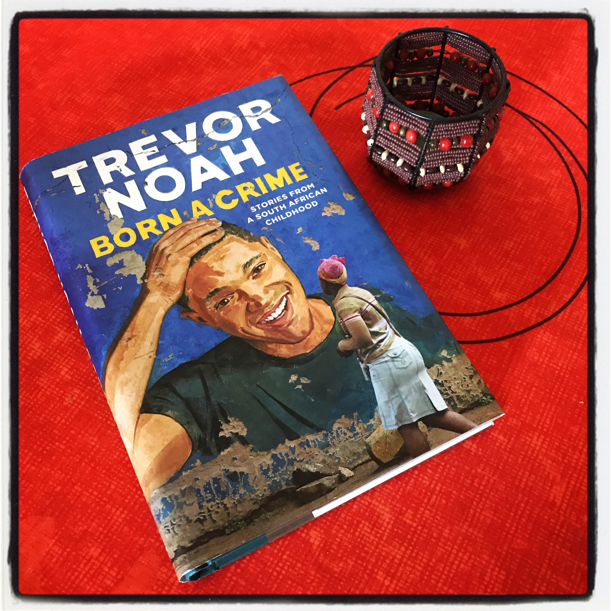
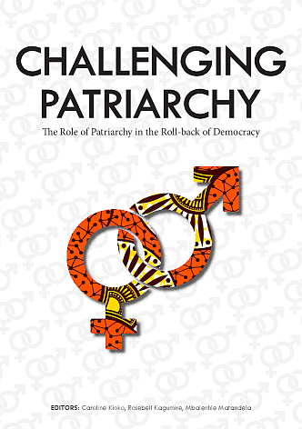
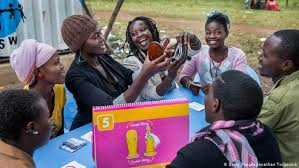

Trevor
In this life one has to always visualize and look beyond where they think they can reach.In reference to the novel 'Born a Crime' it is very clear that Trevor Noah's life was full of challenges and he did not let those challenges weigh him down.It is clear that other students would separate themselves from him because of racism and call him names but he had his own blessing in disguise which was making people laugh.Despite of every challenge he underwent , he remained true to his course.Seeing him as a worldwide celebrated comedian is such a huge testimony compared to his past. Living with his mother and being restrained from going to see his father because of social norms. We see that Trevor Noah's mother is a disciplinarian and she knows sparing the road spoils the child so she tries her very best and disciplines Trevor to be straight in his ways.She happens to be a very daring woman as she visualizes ahead and knows she wants to have a child with a white man.Though at that time it could cross no ones mind to have a baby with a white man because it was forbidden.She holds on to her vision and it comes to pass.

Partriachy
It is a system of society or government in which the father or eldest male is head of the family.Men hold the power and women are largely excluded from it.African feminism is part of a long Pan-African tradition that
builds solidarities across colonial borders that were meant to divide, define and rule.
Therefore, African feminisms in principle, understand the multiple oppressions against
women through the lens of regionalism and Pan-Africanism. Her-stories that centre
the lives of women and their contemporary challenges are important as they revive
the work of feminist ancestors and connect multiple axes of oppression.
Regionalism and unity across borders are not limited to the regional bodies that exist
such as the African Union, IGAD, the East African Community (EAC) and the Great
Lakes regional bodies. African feminism is part of a long Pan-African tradition that
builds solidarities across colonial borders that were meant to divide, define and rule.
Therefore, African feminisms in principle, understand the multiple oppressions against
women through the lens of regionalism and Pan-Africanism. Her-stories that centre
the lives of women and their contemporary challenges are important as they revive
the work of feminist ancestors and connect multiple axes of oppression.

Youths
As seasons and times change it is a high time that the youths should realise that white collar jobs are becomeing more and more of scarce.Therefore what wins is the skills that one has apart from the basic education we get.Ones talent can go a long way in sustaining them in life.
It is very practical espesially during this pandemic of Covid-19.Many people have been retrenched from work due to the reduction in the net profits earned by most companies.This has forced most of them to lay off workers to reduce costs incurred in paying their salaries
Young people then tend to have no choice than to go back home and stay with their relatives and family.But their is always a solution to every problem.We as youths can learn new hand work skills and still gain income.This includes weaving of mats ,table cloths,blacksmithing and making of ornaments and artefacts.This will go a long way in making sure we are not idle and also earn some income from hand work.
Youth empowerment can also be defined as the process whereby young people gain the ability and authority to make informed decisions and implement change in their own lives and the lives of other people. It is a means of encouraging youths to do great things for themselves and also to make great impact in their society.